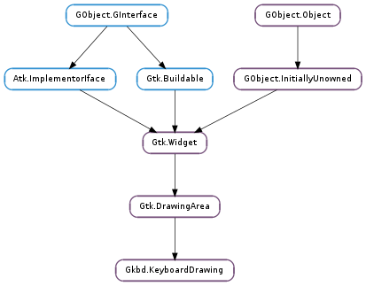

| static | dialog_new() |
| static | dialog_set_group(dialog, registry, group) |
| static | dialog_set_layout(dialog, registry, layout) |
| static | new() |
| get_compat() | |
| get_geometry() | |
| get_keycodes() | |
| get_symbols() | |
| get_types() | |
| print_(parent_window, description) | |
| render(cr, layout, x, y, width, height, dpi_x, dpi_y) | |
| set_groups_levels(groupLevels) | |
| set_layout(id) | |
| set_track_config(enable) | |
| set_track_modifiers(enable) |
None
| Name | Parameters | Return | Description |
|---|---|---|---|
| bad-keycode | int |
| Name | Type | Access |
|---|---|---|
| colors | Gdk.RGBA | r |
| display | xlib.Display | r |
| groupLevels | Gkbd.KeyboardDrawingGroupLevel | r |
| keys | Gkbd.KeyboardDrawingKey | r |
| l3mod | int | r |
| mods | int | r |
| parent | Gtk.DrawingArea | r |
| physical_indicators | Gkbd.KeyboardDrawingDoodad | r |
| physical_indicators_size | int | r |
| renderContext | Gkbd.KeyboardDrawingRenderContext | r |
| screen_num | int | r |
| timeout | int | r |
| track_config | int | r |
| track_modifiers | int | r |
| xkbOnDisplay | bool | r |
| xkb_event_type | int | r |
Bases: Gtk.DrawingArea
| Return type: | Gtk.Widget |
|---|
| Parameters: |
|
|---|
| Parameters: |
|
|---|
| Return type: | Gtk.Widget |
|---|
| Parameters: |
|
|---|
| Parameters: |
|
|---|---|
| Returns: | |
| Return type: |
Renders a keyboard layout to a cairo.Context context. cr and layout can be got from e.g. a Gtk.Widget or a Gtk.PrintContext. cr and layout may be modified by the function but will not be unreffed.
| Parameters: | groupLevels (Gkbd.KeyboardDrawingGroupLevel) – |
|---|